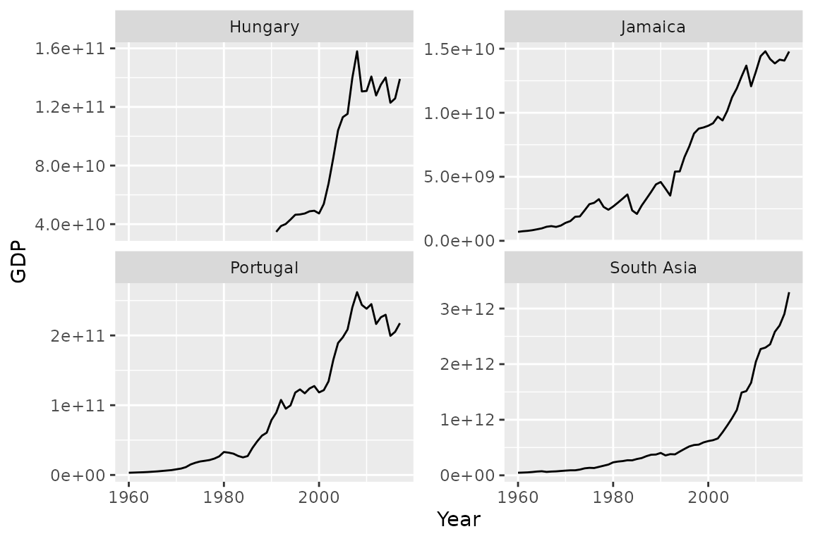

Preparing input for time series models
preparing_input.RmdIn this vignette we’ll see, how to prepare an input to the time
series deep learning models. To do so quickly, we’ll use functions from
{aion} package.
library(data.table)
library(dplyr, warn.conflicts = FALSE)
library(aion)
library(keras)
library(tsibbledata)
library(recipes, warn.conflicts = FALSE)
library(ggplot2)
set.seed(7)We feed a keras models in two ways, using:
- arrays
- generators
Below I present, how to prepare both types of inputs/outputs using
{aion}.
Data analysis
As an example we’ll the global_economy dataset from the
tsibbledata package.
global_economy is a n example of panel
dataset. It simply means that in contains multiple time series,
distinguished with Country What we’d like to do, after
optional preprocessing such as scaling, imputation etc. is to create a
set of arrays (tensors) or a generator, which serves respective
batch-level tensors on fly.
head(global_economy)
#> # A tibble: 6 × 9
#> Country Code Year GDP Growth CPI Imports Exports Population
#> <fct> <fct> <dbl> <dbl> <dbl> <dbl> <dbl> <dbl> <dbl>
#> 1 Afghanistan AFG 1960 537777811. NA NA 7.02 4.13 8996351
#> 2 Afghanistan AFG 1961 548888896. NA NA 8.10 4.45 9166764
#> 3 Afghanistan AFG 1962 546666678. NA NA 9.35 4.88 9345868
#> 4 Afghanistan AFG 1963 751111191. NA NA 16.9 9.17 9533954
#> 5 Afghanistan AFG 1964 800000044. NA NA 18.1 8.89 9731361
#> 6 Afghanistan AFG 1965 1006666638. NA NA 21.4 11.3 9938414
summary(global_economy$Year)
#> Min. 1st Qu. Median Mean 3rd Qu. Max.
#> 1960 1974 1989 1989 2003 2017
glob_econ <- as.data.table(global_economy)
sample_countries <- sample(unique(global_economy$Country), 4)
ggplot(glob_econ[Country %in% sample_countries]) +
geom_line(aes(Year, GDP)) +
facet_wrap(vars(Country), scales = 'free_y')
#> Warning: Removed 31 row(s) containing missing values (geom_path).
Arrays
Typically, in the time series forecasting field, we can distiguish the following types of variables:
- past values of the target variable
- future values of the target variable
- past dynamic features (numeric and categorical)
- future dynamic features (numeric and categorical)
- static features (numeric and categorical)
Past target values can be simply treated as a part of the tensor of the past dynamic features.
The simplest possible scenario is to split the dataset using certain date.
KEY <- 'Country'
INDEX <- 'Year'
TARGET <- 'GDP'
NUMERIC <- c('Growth', 'CPI', 'Imports', 'Exports', 'Population')
CATEGORICAL <- 'Country_idx'
STATIC <- 'Country_idx'
LOOKBACK <- 10
HOIRZON <- 5
train_arrays <-
make_arrays(
data = train,
key = KEY,
index = INDEX,
lookback = LOOKBACK,
horizon = HOIRZON,
stride = 4,
shuffle = TRUE,
target = TARGET,
categorical = CATEGORICAL,
numeric = NUMERIC
)
#> Warning in make_arrays(data = train, key = KEY, index = INDEX, lookback =
#> LOOKBACK, : Found samples with end_time - start_time < total_window_length.
#> They'll be removed.
print(names(train_arrays))
#> [1] "X_past_num" "X_past_cat" "y_fut" "X_fut_num" "X_fut_cat"
print(dim(train_arrays$X_past_num))
#> [1] 1820 10 6As you can see, it contains five types of arrays. One of them,
y_fut is the target, while the rest may be used as the
model input. To demonstrate, how we can manipulate the data with
make_arrays function, let’s add static
variables and a separarte array for past GDP
values.
train_arrays <-
make_arrays(
data = train,
key = KEY,
index = INDEX,
lookback = LOOKBACK,
horizon = HOIRZON,
stride = 4,
shuffle = TRUE,
target = TARGET,
categorical = CATEGORICAL,
numeric = NUMERIC,
static = STATIC,
y_past_sep = TRUE
)
#> Warning in make_arrays(data = train, key = KEY, index = INDEX, lookback =
#> LOOKBACK, : Found samples with end_time - start_time < total_window_length.
#> They'll be removed.
print(names(train_arrays))
#> [1] "y_past" "X_past_num" "X_past_cat" "y_fut" "X_fut_num"
#> [6] "X_fut_cat" "X_static_cat"
print(dim(train_arrays$X_past_num))
#> [1] 1820 10 5Generators
c(train_gen, train_n_steps) %<-%
ts_generator(
data = train,
key = KEY,
index = INDEX,
lookback = LOOKBACK,
horizon = HOIRZON,
stride = 4,
shuffle = TRUE,
target = TARGET,
categorical = CATEGORICAL,
numeric = NUMERIC,
static = STATIC,
y_past_sep = TRUE,
batch_size = 32
)
#> Warning in ts_generator(data = train, key = KEY, index = INDEX, lookback =
#> LOOKBACK, : Found samples with end_time - start_time < total_window_length.
#> They'll be removed.
print(class(train_gen))
#> [1] "function"As we can see, the output is not list of arrays, but a list of two objects:
generator function
Returns a batch of training data at every call. After the loop comes to the end, the counter is reset and the generator starts serving the same data from the beginning again.number of steps
An argument required by the keras methods.
batch <- train_gen()
names(batch)
#> [1] "y_past" "X_past_num" "X_past_cat" "y_fut" "X_fut_num"
#> [6] "X_fut_cat" "X_static_cat"
print(dim(batch$y_past))
#> [1] 32 10 1We can them pass these arguments to the fit function as
follows: